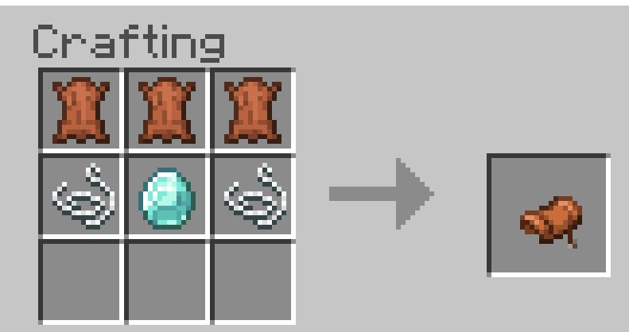

GlobalSphere uses datapacks on the server side to customize the game. These allow you to do many things such craft items in ways that are not possible in pure vanilla, or get different drops from mobs.

Due to some materials not being possible to obtain on our world map, we have added some new item drops to some mobs!
GlobalSphere adds custom crafting recipes for certain items to the server. These work on both Minecraft: Bedrock Edition and Minecraft: Java Edition.
The saddle custom recipe was added.
Drowned custom loot table and custom recipes for the sponge, cobweb, deepslate, cobbled deepslate, and deepslate ores were added.
Deepslate ores can no longer be crafted with minerals. They now require an ore block.
Added the "uncrafting" recipe for netherite ingots.